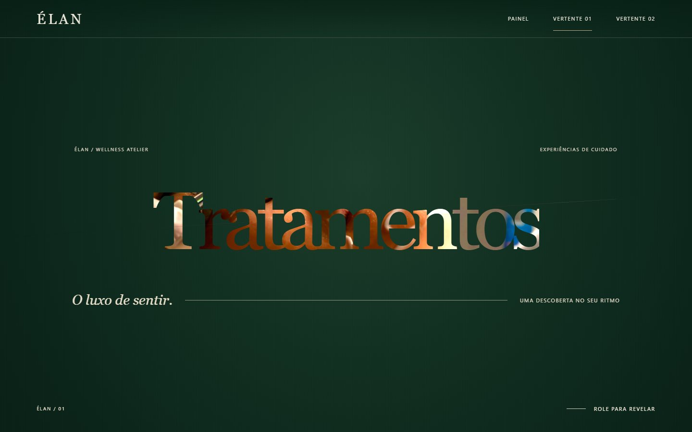
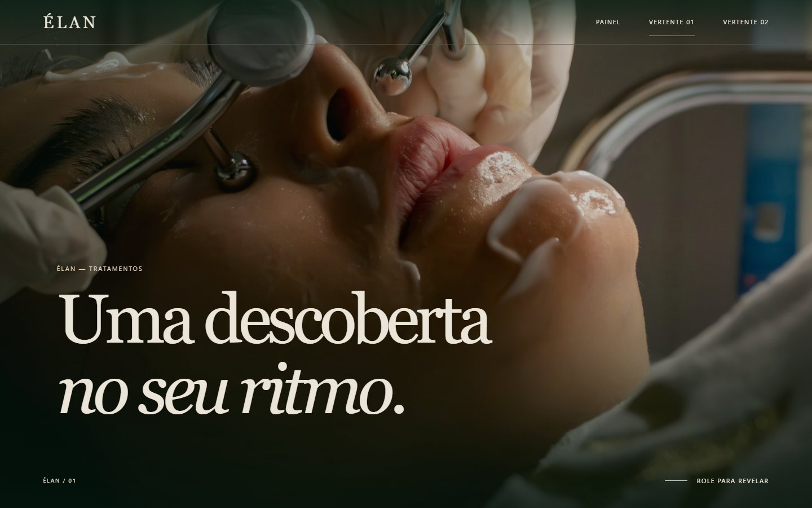
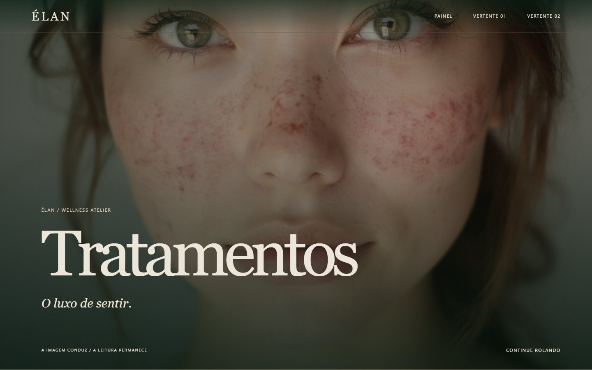
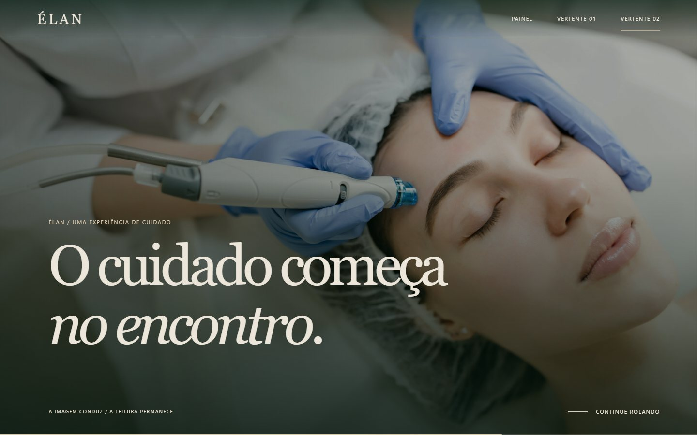

Vertente 01 / RevelaçãoA palavra
vira imagem.
Uma abertura tipográfica que dá lugar à fotografia por uma faixa em expansão. Coreografia C09–23 adaptada ao scroll reversível.

Abertura / composição inicial

Chegada / imagem e texto estáveis
Experimentar a Vertente 01 ↗
Vertente 02 / ContinuidadeUma câmera
entre cenas.
Um enquadramento recua, atravessa o espaço entre duas fotografias e se aproxima da próxima. Coreografia C09–24 adaptada ao scroll reversível.

Abertura / primeiro enquadramento

Chegada / outro enquadramento, pausa de leitura
Experimentar a Vertente 02 ↗